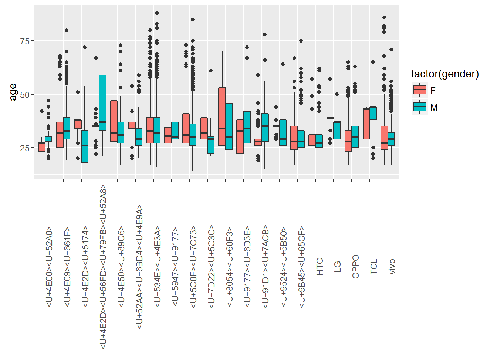

TalkingData Mobile User Demographics
This project uses data from the TalkingData Mobile User Demographics Kaggle competition.
TalkingData is a Chinese based mobile data platform. From the competition site:
In this competition, Kagglers are challenged to build a model predicting users’ demographic characteristics based on their app usage, geolocation, and mobile device properties. Doing so will help millions of developers and brand advertisers around the world pursue data-driven marketing efforts which are relevant to their users and catered to their preferences.
The Data
The data for the competition can be downloaded here: https://www.kaggle.com/c/talkingdata-mobile-user-demographics/data .
I have downloaded and read each file into R, giving each data.frame the same name as the file. Below are the first 3 records of each file.
head(app_events, 3)| event_id | app_id | is_installed | is_active |
|---|---|---|---|
| 1924946 | 3.489720e+18 | 1 | 1 |
| 19620 | 7.723979e+18 | 1 | 1 |
| 53629 | 7.723979e+18 | 1 | 1 |
head(app_labels, 3)| app_id | label_id |
|---|---|
| -2.600988e+18 | 2 |
| -2.600988e+18 | 4 |
| 4.214070e+18 | 5 |
head(events, 3)| event_id | device_id | timestamp | longitude | latitude | region | date | hour | time |
|---|---|---|---|---|---|---|---|---|
| 1924946 | -7.013555e+18 | 2016-05-06 07:39:53 | 109.46 | 21.89 | NA | 2016-05-06 | 7 | morning |
| 19620 | 8.427965e+18 | 2016-05-07 17:38:53 | 117.35 | 25.34 | NA | 2016-05-07 | 17 | midday |
| 53629 | -6.506152e+18 | 2016-05-03 18:55:04 | 0.00 | 0.00 | NA | 2016-05-03 | 18 | evening |
head(gender_age_train, 3)| device_id | gender | age | group |
|---|---|---|---|
| 8.427965e+18 | F | 23 | F23- |
| -3.293695e+18 | M | 40 | M39+ |
| 7.104535e+18 | M | 25 | M23-26 |
head(phone_brand_device_model, 3) # Chinese characters displayed in UTF-8 codes| device_id | phone_brand | device_model |
|---|---|---|
| 8.427965e+18 | vivo | X5M |
| 1.186608e+18 | ||
| 1.186608e+18 |
The number of records in each data.frame can be seen in the table below.
| Table | Records |
|---|---|
| app_events | 12,732,996 |
| app_labels | 459,943 |
| events | 3,252,950 |
| gender_age_train | 74,645 |
| phone_brand_device_model | 187,245 |
And below is the data schema provided on the Kaggle site.

Tidy Data
For our purpose, it is more convenient to look at the data in one nice “tidy” table. I have joined the tables and created some new columns that help make sense of the data. You can see the data by clicking on “Data Table” in the banner above. Below is a data dictionary.
| Fields | Description |
|---|---|
| event_id | Unique mobile event identifier. The primary key for this table. |
| device_id | The mobile device identifier. Demographics are associated with this number. |
| longitude; latitude | Geolocation |
| region | Feature generated from the data. Most events in china take place in three cities: Beijing, Chengdu, Hong Kong, and Shanghai. |
| date; hour; time | Time |
| gender; age | Demographics |
| phone_brand; device_model | Mobile device brand information. |
| apps | Feature generated from the data. The number of active apps during the event. |
| Custom; Education; etc. | These columns are also features generated from the data. These are categories of apps that are active during the event. A value of 1 means that at least 1 app from this category is active. See the file generalizeCategories.R in the GitHub repository for the R code that generated these features. |
Note: The Chinese characters for the phone brand and device model are rendered as their UTF-8 code or sometimes not at all.
Data Exploration
The tidy data set can be visualized using the TalkingData Explorer found here: https://natebyers.shinyapps.io/TalkingData_Explorer/ .
Below are plots that vizualize the distribution of gender and age.

Prediction
Random forest model for predicting gender.
library(caret)
for(i in names(full_data)){
if(class(full_data[[i]]) == "character"){
full_data[[i]] <- as.factor(full_data[[i]])
}
}
gender_subset <- full_data %>%
arrange(gender) %>%
sample_n(2000) %>%
select(gender, region, hour, phone_brand, Games, Education, Finance)
ctrl <- trainControl(method="repeatedcv", number=2, repeats=1,
selectionFunction = "oneSE")
in_train <- createDataPartition(gender_subset$gender, p=.80, list=FALSE)
rf <- train(gender ~ ., data = gender_subset, method = "rf",
metric = "Kappa", trControl = ctrl, subset = in_train)
test <- gender_subset[-in_train,]
test$pred <- predict(rf, test, "raw")
confusionMatrix(test$pred, test$gender)## Confusion Matrix and Statistics
##
## Reference
## Prediction F M
## F 10 19
## M 90 280
##
## Accuracy : 0.7268
## 95% CI : (0.6803, 0.77)
## No Information Rate : 0.7494
## P-Value [Acc > NIR] : 0.8634
##
## Kappa : 0.0477
## Mcnemar's Test P-Value : 2.017e-11
##
## Sensitivity : 0.10000
## Specificity : 0.93645
## Pos Pred Value : 0.34483
## Neg Pred Value : 0.75676
## Prevalence : 0.25063
## Detection Rate : 0.02506
## Detection Prevalence : 0.07268
## Balanced Accuracy : 0.51823
##
## 'Positive' Class : F
## prd <- data.frame(region = "Hong Kong", hour = 12, phone_brand = "vivo",
Games = 1, Education = 1, Finance = 0)
predict(rf, prd)## [1] M
## Levels: F MLinear model for predicting age.
age_subset <- full_data %>%
arrange(age) %>%
sample_n(2000)
split<-createDataPartition(age_subset$age, p = 0.6, list = FALSE)
dev<-age_subset[split,] %>%
select(age, region, hour, phone_brand, Games, Education,
Finance)
val<-age_subset[-split,] %>%
select(age, region, hour, phone_brand, Games, Education,
Finance)
ctrl<-trainControl(method = "cv", number = 2)
lm<-train(age~., data = dev, method = "lm", trControl = ctrl)
lm## Linear Regression
##
## 1202 samples
## 6 predictor
##
## No pre-processing
## Resampling: Cross-Validated (2 fold)
## Summary of sample sizes: 602, 600
## Resampling results:
##
## RMSE Rsquared
## 9.129228 0.03066149
##
## predict(lm, prd)## 1
## 27.83763Application
The models can be used to make a prediction of the users gender and age. Below is an application that gives an estimated age and gender based on the user inputs.